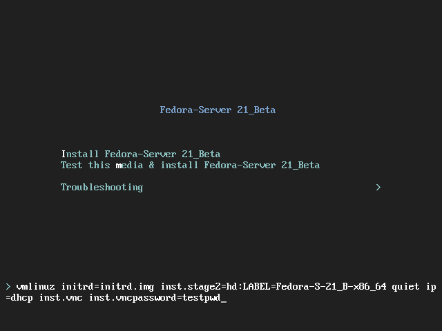

Installing Using VNC
The graphical installation interface is the recommended method of installing Fedora. However, in some cases, accessing the graphical interface directly is difficult or impossible. Some systems lack the capability to connect a display and a keyboard, making VNC a necessity for manual (non-Kickstart) installations.
To allow manual installations on headless systems (systems without a directly connected display, keyboard and mouse), the Anaconda installation program includes a Virtual Network Computing (VNC) mode which allows the graphical mode of the installation program to run locally, but display on another system connected to the network. The VNC installation provides you with the full range of installation options.
This chapter provides instructions on activating VNC mode on the installation system and connecting to it using a VNC viewer.
Installing a VNC Viewer
Performing a VNC installation requires a VNC viewer running on your workstation or another terminal computer. VNC viewers are available in the repositories of most Linux distributions; free VNC viewers are also available for other operating systems such as Windows. On Linux systems, use your package manager to search for a viewer for your distribution.
The following VNC viewers are available in Fedora:
-
TigerVNC - A basic viewer independent of your desktop environment. Installed as the tigervnc package.
-
Vinagre - A viewer for the GNOME desktop environment. Installed as the vinagre package.
-
KRDC - A viewer integrated with the KDE desktop environment. Installed as the kdenetwork-krdc package.
To install any of the viewers listed above, execute the following command as root:
# dnf install package
Replace package with the package name of the viewer you want to use (for example, tigervnc).
|
Procedures in this chapter assume you are using TigerVNC as your VNC viewer. Specific instructions for other viewers may differ, but the general principles still apply. |
Performing a VNC Installation
The Anaconda installation program offers two modes for VNC installation: Direct mode and Connect mode. The modes differ in the way the connection between the server and viewer is established. After you successfully connect, the installation will progress the same way regardless of the mode you used.
- Direct Mode
-
In this mode, Anaconda is configured to start the installation and wait for an incoming connection from VNC viewer before proceeding. While waiting for an incoming connection, the system’s IP address and the port on which the installer expects the connection is displayed on the display or console if available; this implies that you need at least a serial console to connect using this mode, but you can work around this limitation if you know the default VNC port and the system’s IP address.
- Connect Mode
-
In this mode, the VNC viewer is started on the remote system in listening mode. The VNC viewer waits for an incoming connection on a specified port. Then, Anaconda is started and the host name/IP address and port number of the viewer are provided using a boot option or a Kickstart command. When the installation begins, the installation program establishes a connection with the listening VNC viewer using the specified host name/IP address and port number. Connect mode is therefore easier to use on systems with no local display or console, but it also may require additional preparation, because the viewer system must be able to accept incoming connections on the specified port, which usually requires changing firewall settings.
Choosing a VNC Installation Mode
-
Visual and Interactive access to the system
-
If visual and interactive access to the system being installed is not available, then you should use Connect Mode.
-
-
Network Connection Rules and Firewalls
-
If the system being installed is not allowed inbound connections by a firewall, then you must use Connect Mode or disable the firewall. Disabling a firewall may have security implications.
-
If the remote system running the VNC viewer is not allowed incoming connections by a firewall, then you must use Direct Mode, or disable the firewall. Disabling a firewall may have security implications.
-
Installing in VNC Direct Mode
VNC Direct Mode is when the VNC viewer initiates a connection to the system being installed. Anaconda will tell you when to initiate this connection.
-
Open the VNC viewer (for example, TigerVNC) on the workstation you will be using to connect to the system being installed. A window similar to TigerVNC Connection Details will be displayed with an input field allowing you to specify an IP address.
 Figure 1. TigerVNC Connection Details
Figure 1. TigerVNC Connection Details -
Boot the installation system and wait for the boot menu to appear. In the menu, edit boot options (see The Boot Menu) and append the inst.vnc option to the end of the command line.
Optionally, if you want to restrict VNC access to the installation system, add the inst.vncpassword=PASSWORD boot option as well. Replace PASSWORD with the password you want to use for the installation. The VNC password must be between 6 and 8 characters long.
Use a temporary password for the inst.vncpassword= option. It should not be a real or root password you use on any system.
Figure 2. Adding VNC Boot Options -
Start the installation using the edited options. The system will initialize the installation program and start the necessary services. When the system is ready, you will see a message on the screen similar to the following:
13:14:47 Please manually connect your VNC viewer to 192.168.100.131:5901 to begin the install.Note the IP address and port number (in the above example,
192.168.100.131:5901). -
On the system running the VNC Viewer, enter the IP address and port number obtained in the previous step into the
Connection Detailsdialog in the same format as it was displayed on the screen by the installer. Then, clickConnect. The VNC viewer will now connect to the installation system. If you set up a VNC password, enter it when prompted and pressOK.
When the connection is successfully established, a new window will open on the system running the VNC viewer, displaying the installation menu. This window will provide full remote access to the installer until the installation finishes and the system reboots for the first time.
You can then proceed with Installing Using Anaconda.
Installing in VNC Connect Mode
VNC connect mode is when the system being installed initiates a connection to the VNC viewer running on a remote system. Before you start, make sure the remote system is configured to accept incoming connection on the port you want to use for VNC. The exact way to make sure the connection will not be blocked depends on your network and on your workstation’s configuration. Information about configuring the firewall in Fedora is available in the Fedora Security Guide, available at https://docs.fedoraproject.org/.
-
Start the VNC viewer on the client system in listening mode. For example, on Fedora using TigerVNC, execute the following command:
$ vncviewer -listen PORTReplace PORT with the port number you want to use for the connection.
The terminal will display a message similar to the following example:
Example 1. TigerVNC Viewer ListeningTigerVNC Viewer 64-bit v1.3.0 (20130924) Built on Sep 24 2013 at 16:32:56 Copyright (C) 1999-2011 TigerVNC Team and many others (see README.txt) See https://tigervnc.org/ for information on TigerVNC. Thu Feb 20 15:23:54 2014 main: Listening on port 5901
When this message is displayed, the VNC viewer is ready and waiting for an incoming connection from the installation system.
-
Boot the installation system and wait for the boot menu to appear. In the menu, edit boot options (see The Boot Menu) and append the following options to the end of the command line:
inst.vnc inst.vncconnect=HOST:PORTReplace HOST with the IP address of the system running the listening VNC viewer, and PORT with the port number that the VNC viewer is listening on.
-
Start the installation. The system will initialize the installation program and start the necessary services. Once the initialization is finished, Anaconda will attempt to connect to the IP address and port you provided in the previous step.
When the connection is successfully established, a new window will open on the system running the VNC viewer, displaying the installation menu. This window will provide full remote access to the installer until the installation finishes and the system reboots for the first time.
You can then proceed with Installing Using Anaconda.
Kickstart Considerations
Commands for using a VNC installation are also available in Kickstart installations. Using just the vnc command will set up an installation using Direct Mode. Options are available to set up an installation using Connect Mode. For more information about the vnc command and options used in Kickstart files, see Kickstart Syntax Reference.
Considerations for Headless Systems
When installing headless systems, the only choices are an automated Kickstart installation or an interactive VNC installation using connect mode. For more information about automated Kickstart installation, see Kickstart Syntax Reference. The general process for an interactive VNC installation is described below.
-
Set up a PXE server that will be used to start the installation. Information about installing and performing basic configurating of a PXE server can be found in Setting Up an Installation Server.
-
Configure the PXE server to use the boot options for a connect mode VNC installation. For information on these boot options, see Installing in VNC Connect Mode.
-
Follow the procedure for a VNC Installation using connect mode as described in the Starting VNC in Connect Mode. However, when directed to boot the system, boot it from the PXE server.